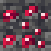
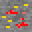
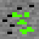
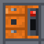
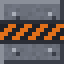

Items & blocks
Search all 115 named mod items and blocks. Recipe links point to the matching recipe card.
115 entries
No matching items or blocks.
| Icon | Name | Kind | How to get it |
|---|---|---|---|
| Black Diamond Blockbentenmod:black_diamond_block | Block | Crafting recipe Drop from Black Diamond Block | |
| Black Diamond Orebentenmod:black_diamond_ore | Block | Drop from Black Diamond Ore Worldgen: Overworld | |
| Deepslate Black Diamond Orebentenmod:deepslate_black_diamond_ore | Block | Drop from Deepslate Black Diamond Ore | |
| Deepslate Imperium Orebentenmod:deepslate_imperium_ore | Block | Drop from Deepslate Imperium Ore | |
| Deepslate Legendary Orebentenmod:deepslate_legendary_ore | Block | Drop from Deepslate Legendary Ore | |
| Deepslate Omnitrix Orebentenmod:deepslate_omnitrix_ore | Block | Drop from Deepslate Omnitrix Ore | |
 | Deepslate Ruby Orebentenmod:deepslate_ruby_ore | Block | Drop from Deepslate Ruby Ore |
| Deepslate Speed Orebentenmod:deepslate_speed_ore | Block | Drop from Deepslate Speed Ore | |
| FIre Blockbentenmod:fire_block | Block | Crafting recipe Drop from FIre Block | |
| Fire Orebentenmod:fire_ore | Block | Drop from Fire Ore Worldgen: Nether | |
| Imperium Blockbentenmod:imperium_block | Block | Crafting recipe Drop from Imperium Block | |
 | Imperium Orebentenmod:imperium_ore | Block | Drop from Imperium Ore Worldgen: Overworld |
| Infinitun Blockbentenmod:infinitum_block | Block | Crafting recipe Drop from Infinitun Block | |
| Infinitun Orebentenmod:infinitum_ore | Block | Drop from Infinitun Ore Worldgen: Nether | |
| Legendary Blockbentenmod:legendary_block | Block | Crafting recipe Drop from Legendary Block | |
| Legendary Orebentenmod:legendary_ore | Block | Crafting recipe Drop from Legendary Ore Worldgen: Overworld | |
| Null Crystal Orebentenmod:null_crystal_ore | Block | Drop from Null Crystal Ore Worldgen: Null Void | |
| Null Void Stonebentenmod:null_void_stone | Block | Null Void terrain. Drop from Null Void Stone | |
| Null Void Stone Bricksbentenmod:null_void_stone_bricks | Block | Null Void fortress blocks. Crafting recipe Drop from Null Void Stone Bricks | |
| Omnitrix Blockbentenmod:omnitrix_block | Block | Crafting recipe Drop from Omnitrix Block | |
 | Omnitrix Orebentenmod:omnitrix_ore | Block | Drop from Omnitrix Ore Worldgen: Overworld |
| Omnitrix Podbentenmod:omnitrix_pod | Block | Break the pod at an Omnitrix crash site. | |
| Omntrix Crafterbentenmod:omnitrix_crafter | Block | Crafting recipe Drop from Omntrix Crafter | |
| Plumber Hullbentenmod:plumber_hull | Block | Drop from Plumber Hull | |
 | Prison Vaultbentenmod:prison_vault | Block | Drop from Prison Vault |
 | Prison Wallbentenmod:prison_wall | Block | Drop from Prison Wall |
| Ruby Blockbentenmod:ruby_block | Block | Crafting recipe Drop from Ruby Block | |
| Ruby Orebentenmod:ruby_ore | Block | Drop from Ruby Ore Worldgen: Overworld | |
| Speed Blockbentenmod:speed_block | Block | Crafting recipe Drop from Speed Block | |
| Speed Orebentenmod:speed_ore | Block | Drop from Speed Ore Worldgen: Overworld | |
| Taydenite Blockbentenmod:taydenite_block | Block | Crafting recipe Drop from Taydenite Block | |
| Taydenite Orebentenmod:taydenite_ore | Block | Drop from Taydenite Ore Worldgen: world generation | |
| 4Arms bootsbentenmod:fourarms_boot | Item | Omnitrix Crafter recipe | |
| 4Arms chestplatebentenmod:fourarms_chestplate | Item | Omnitrix Crafter recipe | |
| 4Arms helmetbentenmod:fourarms_helmet | Item | Omnitrix Crafter recipe | |
| 4Arms leggingbentenmod:fourarms_leggings | Item | Omnitrix Crafter recipe | |
| ASCALONbentenmod:sword | Item | Omnitrix Crafter recipe | |
| AXE SLAYERbentenmod:axe | Item | Omnitrix Crafter recipe | |
| Black Diamondbentenmod:black_diamond | Item | Crafting recipe Blasting recipe Blasting recipe Blasting recipe Blasting recipe Crafting recipe | |
| Black Diamond Axebentenmod:black_diamond_axe | Item | Omnitrix Crafter recipe | |
| Black Diamond bootsbentenmod:black_diamond_boots | Item | No recipe, loot drop or placed-feature source is listed in the current data. | |
| Black Diamond chestplatebentenmod:black_diamond_chestplate | Item | No recipe, loot drop or placed-feature source is listed in the current data. | |
| Black Diamond helmetbentenmod:black_diamond_helmet | Item | No recipe, loot drop or placed-feature source is listed in the current data. | |
| Black Diamond Hoebentenmod:black_diamond_hoe | Item | Omnitrix Crafter recipe | |
| Black Diamond leggingbentenmod:black_diamond_leggings | Item | No recipe, loot drop or placed-feature source is listed in the current data. | |
| Black Diamond Lensbentenmod:black_diamond_lens | Item | Omnitrix Crafter recipe | |
| Black Diamond Pickaxebentenmod:black_diamond_pickaxe | Item | Omnitrix Crafter recipe | |
| Black Diamond scrapbentenmod:black_diamond_scrap | Item | Blasting recipe Smelting recipe Drop from Black Diamond Ore Drop from Deepslate Black Diamond Ore | |
| Black Diamond Shovelbentenmod:black_diamond_shovel | Item | Omnitrix Crafter recipe | |
| Black Diamond Swordbentenmod:black_diamond_sword | Item | Omnitrix Crafter recipe | |
| Cell Keybentenmod:cell_key | Item | Drop from Prison Warden | |
| Crab Spawn Eggbentenmod:crab_spawn_egg | Item | Omnitrix Crafter recipe | |
| Enchanted Omnitrix Applebentenmod:enchanted_omnitrix_apple | Item | Omnitrix Crafter recipe | |
| Fire Applebentenmod:fire_apple | Item | Omnitrix Crafter recipe | |
| Fire(ingot)bentenmod:fire | Item | Crafting recipe Blasting recipe Smelting recipe Blasting recipe Blasting recipe Blasting recipe Blasting recipe | |
| Heatblast bootsbentenmod:heatblast_boots | Item | Omnitrix Crafter recipe | |
| Heatblast chestplatebentenmod:heatblast_chestplate | Item | Omnitrix Crafter recipe | |
| Heatblast helmetbentenmod:heatblast_helmet | Item | Omnitrix Crafter recipe | |
| Heatblast leggingsbentenmod:heatblast_leggings | Item | Omnitrix Crafter recipe | |
| Heatblast Swordbentenmod:heatblast_sword | Item | Omnitrix Crafter recipe | |
| Imperiumbentenmod:imperium | Item | Crafting recipe Blasting recipe Smelting recipe | |
| Imperium Axebentenmod:imperium_axe | Item | Omnitrix Crafter recipe | |
| Imperium Pickaxebentenmod:imperium_pickaxe | Item | Omnitrix Crafter recipe | |
| Imperium Swordbentenmod:imperium_sword | Item | Omnitrix Crafter recipe | |
| Infinitumbentenmod:infinitum | Item | Crafting recipe Blasting recipe Blasting recipe Blasting recipe Blasting recipe Crafting recipe | |
| Infinitum Axebentenmod:infinitum_axe | Item | Omnitrix Crafter recipe | |
| Infinitum bootsbentenmod:infinitum_boots | Item | No recipe, loot drop or placed-feature source is listed in the current data. | |
| Infinitum chestplatebentenmod:infinitum_chestplate | Item | No recipe, loot drop or placed-feature source is listed in the current data. | |
| Infinitum helmetbentenmod:infinitum_helmet | Item | No recipe, loot drop or placed-feature source is listed in the current data. | |
| Infinitum Hoebentenmod:infinitum_hoe | Item | Omnitrix Crafter recipe | |
| Infinitum leggingbentenmod:infinitum_leggings | Item | No recipe, loot drop or placed-feature source is listed in the current data. | |
| Infinitum Pickaxebentenmod:infinitum_pickaxe | Item | Omnitrix Crafter recipe | |
| Infinitum scrapbentenmod:infinitum_scrap | Item | Blasting recipe Smelting recipe Drop from Infinitun Ore | |
| Infinitum Shovelbentenmod:infinitum_shovel | Item | Omnitrix Crafter recipe | |
| Infinitum Swordbentenmod:infinitum_sword | Item | Omnitrix Crafter recipe | |
| Knight Bootsbentenmod:boots | Item | Omnitrix Crafter recipe | |
| Knight Chestplatebentenmod:chestplate | Item | Omnitrix Crafter recipe | |
| Knight helmetbentenmod:helmet | Item | Omnitrix Crafter recipe | |
| Knight leggingsbentenmod:leggings | Item | Omnitrix Crafter recipe | |
| Kraab Clawbentenmod:kraab_claw | Item | 1 to 2 drops from Kraab | |
| Legendarybentenmod:legendary | Item | Blasting recipe Blasting recipe Blasting recipe Blasting recipe Smelting recipe Blasting recipe | |
| Legendary Casingbentenmod:legendary_casing | Item | Omnitrix Crafter recipe | |
| Master Controlbentenmod:master_control | Item | Drop from Zs'Skayr | |
| Null Crystalbentenmod:null_crystal | Item | Drop from Null Crystal Ore | |
| Null Guardian Membranebentenmod:null_guardian_membrane | Item | 1 to 2 drops from Null Guardian | |
| Null Void Gliderbentenmod:null_void_glider | Item | Crafting recipe | |
| Null Void Projectorbentenmod:null_void_projector | Item | Omnitrix Crafter recipe | |
| Omnitrixbentenmod:omnitrix_watch | Item | Crash-site pod; the Crafter chain also has a recipe. Omnitrix Crafter recipe Drop from Omnitrix Pod | |
| Omnitrix Applebentenmod:omnitrix_apple | Item | Omnitrix Crafter recipe | |
| Omnitrix Corebentenmod:omnitrix_core | Item | Omnitrix Crafter recipe | |
| Omnitrix Field Guidebentenmod:omnitrix_guide | Item | Crafting recipe | |
| Omnitrix Ingotbentenmod:omnitrix | Item | Blasting recipe Crafting recipe Blasting recipe Smelting recipe | |
| Plumber Badgebentenmod:plumber_badge | Item | No recipe, loot drop or placed-feature source is listed in the current data. | |
| Plumber Blasterbentenmod:plumber_blaster | Item | Omnitrix Crafter recipe | |
| Plumber Bootsbentenmod:plumber_boots | Item | Omnitrix Crafter recipe | |
| Plumber Chestplatebentenmod:plumber_chestplate | Item | Omnitrix Crafter recipe | |
| Plumber Helmetbentenmod:plumber_helmet | Item | Omnitrix Crafter recipe | |
| Plumber Leggingsbentenmod:plumber_leggings | Item | Omnitrix Crafter recipe | |
| Prisoner Cuffsbentenmod:prisoner_cuffs | Item | 0 to 1 drops from Null Void Prisoner 0 to 1 drops from Prison Warden | |
| Raw Imperiumbentenmod:raw_imperium | Item | Drop from Deepslate Imperium Ore Drop from Imperium Ore | |
| Raw Legendaryybentenmod:raw_legendary | Item | Drop from Deepslate Legendary Ore Drop from Legendary Ore | |
| Raw Omnitrixbentenmod:raw_omnitrix | Item | Drop from Deepslate Omnitrix Ore Drop from Omnitrix Ore | |
| Rubybentenmod:ruby | Item | Blasting recipe Blasting recipe Blasting recipe Blasting recipe Crafting recipe Blasting recipe Smelting recipe Drop from Deepslate Ruby Ore Drop from Ruby Ore | |
| Ruby Applebentenmod:ruby_apple | Item | Omnitrix Crafter recipe | |
| Speedbentenmod:speed | Item | Crafting recipe Blasting recipe Smelting recipe Blasting recipe Blasting recipe Blasting recipe Blasting recipe Drop from Deepslate Speed Ore Drop from Speed Ore | |
| Taydenitebentenmod:taydenite | Item | Crafting recipe Drop from Lepidopterran Scout Drop from Taydenite Ore | |
| Ultamte Imperium Pickaxebentenmod:imperium_pickaxe_upgraded | Item | Omnitrix Crafter recipe | |
| Vilgax Beaconbentenmod:vilgax_beacon | Item | Omnitrix Crafter recipe | |
| Vilgax Corebentenmod:vilgax_core | Item | Drop from Vilgax | |
| Vilgax Drone Spawn Eggbentenmod:vilgax_drone_spawn_egg | Item | No recipe, loot drop or placed-feature source is listed in the current data. | |
| Vilgax Spawn Eggbentenmod:vilgax_spawn_egg | Item | No recipe, loot drop or placed-feature source is listed in the current data. | |
| xlr8 bootsbentenmod:xlr8_boots | Item | Omnitrix Crafter recipe | |
| xlr8 chestplatebentenmod:xlr8_chestplate | Item | Omnitrix Crafter recipe | |
| xlr8 helmetbentenmod:xlr8_helmet | Item | Omnitrix Crafter recipe | |
| xlr8 leggingbentenmod:xlr8_leggings | Item | Omnitrix Crafter recipe |
A source note appears when a recipe, entity or block loot table, or placed feature identifies a way to get an entry. The current data does not provide a source for every registry entry.